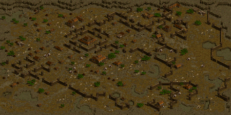
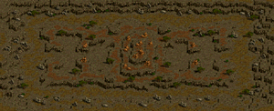
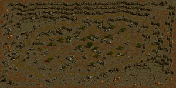
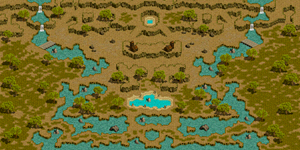

アリーナGvG 対戦可能時間(21:20～23:20)
アリーナGvG一覧(21:20-23:20帯)
アリーナGvG全時間一覧
日本REDSTONE(2019.1現在)にて最もGvが組まれやすい21:00-24:00に絞ったGv表を掲載。
他の時間帯についても同様の法則で40分おきに開催されています。
実際の対戦組表は以下のようなフォーマットになっています。

※画像は土曜日に撮影。
GvGが組まれる際に、「障害物が少ない」「適切なサイズである」「比較的安定したマップである」などの理由から「デフヒルズ / 砂漠の遺跡」と「ナダラ平原 / 2つの丘」が特に人気です。
土曜日は攻城戦と時間が被るため、GvGが組まれにくい傾向があります。
GvGは各ギルドにつき1日1回、週3回まで可能。(水曜日6:00リセット)
各日のGvGは朝6時から申し込み可能です。
アリーナGvG一覧(21:20-23:20帯)
| MAPイメージ |  |  |  |

|  |

|

|
|---|---|---|---|---|---|---|---|
| スタート時間 | 廃墟スバイン要塞 | ソゴム山脈 / 赤い丘 | エルベルク山脈 / 岩の谷 | デフヒルズ / 砂漠の遺跡 | バベル大河 / 2粒の涙 | ナダラ平原 / 2つの丘 | ハノブ / 地下決闘場 |
| 21:20 | 21:20 | 21:21 | 21:22 | 21:23 | 21:24 | 21:25 | 21:25 |
| 21:23 | 21:24 | 21:25 | 21:26 | 21:27 | 21:28 | 21:28 | |
| 21:27 | 21:28 | 21:29 | 21:30 | 21:31 | 21:32 | 21:32 | |
| 21:30 | 21:31 | 21:32 | 21:33 | 21:34 | 21:35 | 21:35 | |
| 21:34 | 21:35 | 21:36 | 21:37 | 21:38 | 21:39 | 21:39 | |
| 21:37 | 21:38 | 21:39 | 21:40 | 21:41 | 21:42 | 21:42 | |
| 21:41 | 21:42 | 21:43 | 21:44 | 21:45 | 21:46 | 21:46 | |
| 21:44 | 21:45 | 21:46 | 21:47 | 21:48 | 21:49 | 21:49 | |
| 21:48 | 21:49 | 21:50 | 21:51 | 21:52 | 21:53 | 21:53 | |
| 21:51 | 21:52 | 21:53 | 21:54 | 21:55 | 21:56 | 21:56 | |
| スタート時間 | 廃墟スバイン要塞 | ソゴム山脈 / 赤い丘 | エルベルク山脈 / 岩の谷 | デフヒルズ / 砂漠の遺跡 | バベル大河 / 2粒の涙 | ナダラ平原 / 2つの丘 | ハノブ / 地下決闘場 |
| 22:00 | 22:00 | 22:01 | 22:02 | 22:03 | 22:04 | 22:05 | 22:05 |
| 22:03 | 22:04 | 22:05 | 22:06 | 22:07 | 22:08 | 22:08 | |
| 22:07 | 22:08 | 22:09 | 22:10 | 22:11 | 22:12 | 22:12 | |
| 22:10 | 22:11 | 22:12 | 22:13 | 22:14 | 22:15 | 22:15 | |
| 22:14 | 22:15 | 22:16 | 22:17 | 22:18 | 22:19 | 22:19 | |
| 22:17 | 22:18 | 22:19 | 22:20 | 22:21 | 22:22 | 22:22 | |
| 22:21 | 22:22 | 22:23 | 22:24 | 22:25 | 22:26 | 22:26 | |
| 22:24 | 22:25 | 22:26 | 22:27 | 22:28 | 22:29 | 22:29 | |
| 22:28 | 22:29 | 22:30 | 22:31 | 22:32 | 22:33 | 22:33 | |
| 22:31 | 22:32 | 22:33 | 22:34 | 22:35 | 22:36 | 22:36 | |
| スタート時間 | 廃墟スバイン要塞 | ソゴム山脈 / 赤い丘 | エルベルク山脈 / 岩の谷 | デフヒルズ / 砂漠の遺跡 | バベル大河 / 2粒の涙 | ナダラ平原 / 2つの丘 | ハノブ / 地下決闘場 |
| 22:40 | 22:40 | 22:41 | 22:42 | 22:43 | 22:44 | 22:45 | 22:45 |
| 22:43 | 22:44 | 22:45 | 22:46 | 22:47 | 22:48 | 22:48 | |
| 22:47 | 22:48 | 22:49 | 22:50 | 22:51 | 22:52 | 22:52 | |
| 22:50 | 22:51 | 22:52 | 22:53 | 22:54 | 22:55 | 22:55 | |
| 22:54 | 22:55 | 22:56 | 22:57 | 22:58 | 22:59 | 22:59 | |
| 22:57 | 22:58 | 22:59 | 23:00 | 23:01 | 23:02 | 23:02 | |
| 23:01 | 23:02 | 23:03 | 23:04 | 23:05 | 23:06 | 23:06 | |
| 23:04 | 23:05 | 23:06 | 23:07 | 23:08 | 23:09 | 23:09 | |
| 23:08 | 23:09 | 23:10 | 23:11 | 23:12 | 23:13 | 23:13 | |
| 23:11 | 23:12 | 23:13 | 23:14 | 23:15 | 23:16 | 23:16 | |
| MAPイメージ |
|
|
|